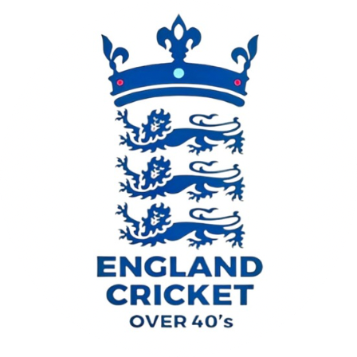

England Over 40s
World Cup 2026
Home
Squad
Groups
Knockout
Main Site
England
← Fixtures & Results
IMC Over 40s World Cup 2026
🏏 Guyana, West Indies
📅 17 – 31 Oct 2026
45 Overs · 16 Nations
🏴 England are in Zone B
Group Stage
Knockout Stage
Zone A
🏴 Zone B — England
Loading groups…
Loading bracket…